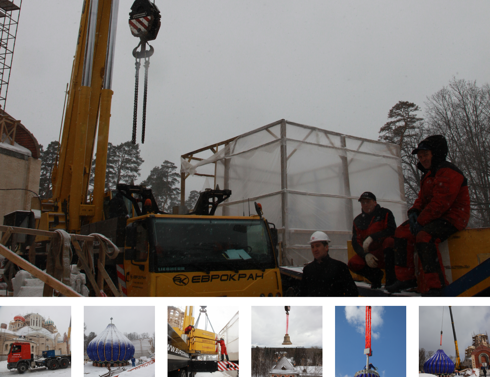
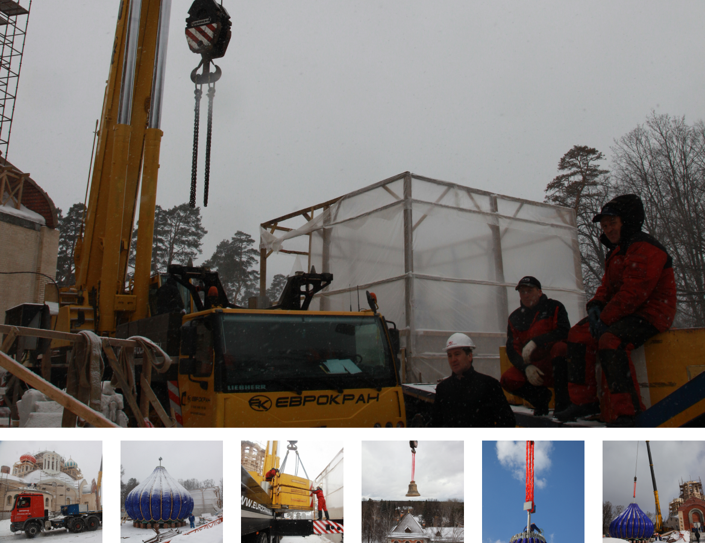

Аренда спецтехники
LIEBHERR c 2000 года
10:00-17:00

г. Москва,
ул. Куликовская, 12
.png)
+7 (495) 645-19-20
+7 (495) 226-20-30
+7 (499) 929-96-66
Главная - Объекты
Разгрузка и монтаж трансформатора
Разгрузка и монтаж трансформатора ТРДН 80000-110 весом 90т на объекте: НПЗ, г.Туапсе
Работу выполняет автокран LIEBHERR LTM1500грузоподъемностью 500т.
.png) 

Заголовок
Гусеничный кран LR 1750 находит свое применение в строительстве электростанций, нефтеперерабатывающих заводов, на строительных
площадках мостов и при монтаже ветросиловых установок.
Эта 750-тонная машина имеет универсальное применение со своей 140-метровой основной стрелой, 105-метровым управляемым
удлинителем стрелы, 21-метровым монтажным удлинителем, деррик-оборудованием и 400-тонным подвесным противовесом или
балластировочной тележкой.
Компактные габариты компонентов подъемного крана и их умеренный индивидуальный вес позволяют обеспечить экономичную
транспортировку этого подъемного крана к строительной площадке.
Этот 750-тонный кран может также использоваться с выдвижными опорами, имеющими опорную базу 13 x 13 м. Результирующая
грузоподъемность в этом случае может быть увеличена до 370 %.
Гусеничный кран LR 1750 находит свое применение в строительстве электростанций, нефтеперерабатывающих заводов, на строительных
площадках мостов и при монтаже ветросиловых установок.
Эта 750-тонная машина имеет универсальное применение со своей 140-метровой основной стрелой, 105-метровым управляемым
удлинителем стрелы, 21-метровым монтажным удлинителем, деррик-оборудованием и 400-тонным подвесным противовесом или
балластировочной тележкой.
Компактные габариты компонентов подъемного крана и их умеренный индивидуальный вес позволяют обеспечить экономичную
транспортировку этого подъемного крана к строительной площадке.
Этот 750-тонный кран может также использоваться с выдвижными опорами, имеющими опорную базу 13 x 13 м. Результирующая
грузоподъемность в этом случае может быть увеличена до 370 %.Гусеничный кран LR 1750 находит свое применение в строительстве
электростанций, нефтеперерабатывающих заводов, на строительных площадках мостов и при монтаже ветросиловых установок.
Эта 750-тонная машина имеет универсальное применение со своей 140-метровой основной стрелой, 105-метровым управляемым
удлинителем стрелы, 21-метровым монтажным удлинителем, деррик-оборудованием и 400-тонным подвесным противовесом или
балластировочной тележкой.
Компактные габариты компонентов подъемного крана и их умеренный индивидуальный вес позволяют обеспечить экономичную
транспортировку этого подъемного крана к строительной площадке.
Этот 750-тонный кран может также использоваться с выдвижными опорами, имеющими опорную базу 13 x 13 м. Результирующая
грузоподъемность в этом случае может быть увеличена до 370 %.
Другие объекты

Разгрузка и монтаж
трансформатора автокраном
LIEBHERR LTM1500
г.Туапсе
Разгрузка и монтаж
трансформатора автокраном
LIEBHERR LTM1500
г.Туапсе
Разгрузка и монтаж
трансформатора автокраном
LIEBHERR LTM1500
г.Туапсе
Аренда мобильных и гусеничных кранов LIEBHERR
© 2000-2021 Все права
Клиентам
Услуги
Каталог техники
Аренда кранов
Наши работы
Прайс-лист
Контакты
Техника
Гусеничные краны
Мобильные краны
Низеорамные краны
Модульные платформы
Услуги
Аренда гусеничного крана
Аренда мобильного крана
Аренда башенного крана
Перевозка негабаритного груза
Разработка ппрк
Контакты
+7 (499)929-96-66
+7 (985)364-55-18
+7 (985)226-20-30